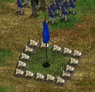
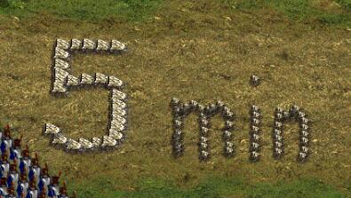
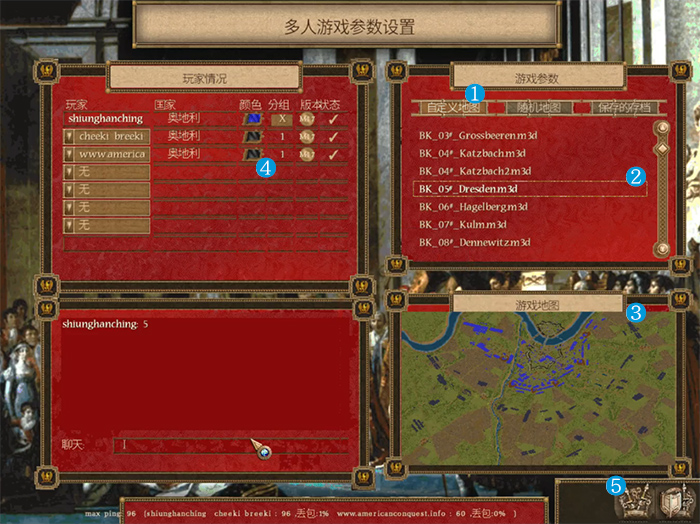

在 欧洲战争-拿破仑 MOD 的开发时，开发者就已经构思了一种新的玩法：通过联网对战进行重演历史战役。
开发者团队（包括一些玩家）制作了一百多张游戏地图以供玩家进行游戏。这些地图往往是模拟拿破仑战争期间的一些著名战役。在这些地图上已部署好了需要的军队。这些地图都允许多个玩家一起进行游戏。如果只有2个玩家，可以每个玩家各控制一方，但有些战役有着超长的战线，这考验玩家的操作水平。也可以2～3个玩家共同控制战役的一方（在游戏中选择同一种颜色即可），分工合作以保证战略调度不出问题；操作同一阵营的玩家需要提供沟通好（或连线沟通）每个人的任务或操作的士兵。游戏最大支持7位玩家同时进行游戏。地图中的每一方（每一种颜色）必须有玩家进行控制，不要将其设定为电脑AI，如果给某一放设定为电脑AI，则这一方并不会进行操作，只会被动还击。
战役的目的通常是在规定时间内夺取对方的旗帜（目标点），或根据分数判定，或根据剩余士兵数量，或者二者皆有；一般情况下，如无特别说明，战役时间都是50分钟，若50分钟内双方都未达成目标，则表示平局；由于玩家玩的只是自定义地图，并没有胜负判定系统，需要玩家根据不同地图的规则自觉判定胜负或平局。一些地图中还定义了某些军队需要在特定时间后进入战场，这需要玩家自觉遵守规则。本站 地图介绍 板块介绍了游戏中包含的所有地图的规则。


注意：需要所有玩家的游戏中都有这张地图，并且地图文件名要相同。本站下载的 欧洲战争-拿破仑 游戏中即包含了所有的地图，建议不要将地图文件随意改名。
以德雷斯顿战役为例介绍下联网游戏操作方法：

1）通过局域网或对战平台联网启动游戏，进入“多人游戏”——“死亡竞赛”，创建一个游戏房间，其他玩家加入该房间；
2）选择右边“游戏参数”板块里的❶自定义地图；
3）在列表中选择德雷斯顿战役的地图“BK_05#_Dresden.m3d”❷，此时“游戏地图”板块就会显示该地图的预览图❸；
4）玩家根据游戏预览图上不同阵营选择对应的颜色和分组❹。多个玩家控制同一阵营需选择相同颜色和相同组。可以通过 地图介绍 板块来了解地图上不同颜色对应的阵营；
5）选择妥当后，房间创建者即可点击❺开始按钮启动游戏。